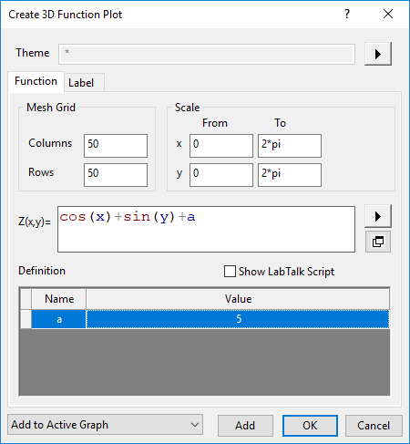

Eine Matrix von Z-Werten wird gleichzeitig erzeugt, wenn Sie ein 3D-Funktionsdiagramm erstellen.

|
Eine Matrix von Z-Werten wird gleichzeitig erzeugt, wenn Sie ein 3D-Funktionsdiagramm erstellen. |
Wenn Sie ein 3D-Funktionsdiagramm zeichnen, erstellt Origin zuerst eine Matrix, die als Grundlage für das Erstellen des Diagramms dient. Legen Sie die Matrixdimensionen in den Bearbeitungsfeldern für Spalten und Zeilen fest. Dies bestimmt die Dichte der 3D-Gitternetzlinienoberfläche.
Legen Sie den Anfang und das Ende der X- und Y-Bereiche fest.
Aktivieren Sie dieses Kontrollkästchen, damit Origin den XY-Bereich automatisch bestimmt. Diese Option ist standardmäßig ausgewählt, wenn Zu aktivem Diagramm hinzufügen aktiviert ist. Sie können dieses Kontrollkästchen deaktivieren, um den Anfang und das Ende des XY-Bereichs in den Feldern Von und Bis festzulegen.
Geben Sie die Oberflächenformel hier ein.
Gängige mathematische und statistische Verteilungsfunktionen sind verfügbar, indem Sie auf die dreieckige Schaltfläche rechts neben dem Textfeld Z(x,y) klicken. Weitere Einzelheiten zu diesen Funktionen finden Sie im Abschnitt Standardfunktionen von LabTalk.
Zusätzlich können Sie eine Funktion mit Hilfe von allen durch Origin erkennbaren Operatoren direkt in das Textfeld eingeben. Für eine Multiplikation müssen Sie den Multiplikationsoperator (*) einfügen. Sie können auch jede von Origins Standardfunktionen aufrufen, auch wenn sie sich nicht im Ausklappmenü der dreieckigen Schaltfläche befinden, oder jede andere Funktion, die sie definiert haben. Sie können auch einen Bereich mit Namen in Ihrem Ausdruck verwenden.
Wenn Sie auf die Schaltfläche In separatem Fenster zeigen  unter der dreieckigen Schaltfläche klicken, wird ein neuer Dialog Z(x,y)= mit einem breiteren Eingabefeld und einem Vorschaufeld geöffnet. Das Vorschaufeld zeigt eine Matrix, die aus der von Ihnen definierten Z(x,y) berechnet wird. Klicken Sie auf die dreieckige Schaltfläche, um zwischen dem Datenmodus und dem Bildmodus zu wechseln, und wählen Sie das Zeigen von XY-Werten bzw. Indizes. Sie können das Ergebnis prüfen und die Formel im Eingabefeld ggf. bearbeiten.
unter der dreieckigen Schaltfläche klicken, wird ein neuer Dialog Z(x,y)= mit einem breiteren Eingabefeld und einem Vorschaufeld geöffnet. Das Vorschaufeld zeigt eine Matrix, die aus der von Ihnen definierten Z(x,y) berechnet wird. Klicken Sie auf die dreieckige Schaltfläche, um zwischen dem Datenmodus und dem Bildmodus zu wechseln, und wählen Sie das Zeigen von XY-Werten bzw. Indizes. Sie können das Ergebnis prüfen und die Formel im Eingabefeld ggf. bearbeiten.
Definieren Sie Namen und Werte der Variablen. Diese Variablen können in der Funktionsdefinition verwendet werden. Wenn eine Variable noch nicht definiert ist, aber im Funktionskörper verwendet wird, ist sie rot markiert.
Aktivieren Sie dieses Kontrollkästchen, um Variablen mit Hilfe von LabTalk-Skripts zu definieren. Wenn Sie bereits einige Variablen in der Tabelle Definition definiert haben, aktivieren Sie dieses Kontrollkästchen, um die Äquivalente des LabTalk-Skripts zu diesen Funktionen zu zeigen.
Zusätzlich zu den Standardfunktionen und benutzerdefinierten Funktionen werden hier auch alle anderen LabTalk-Skripts unterstützt. Sie können also Bereichsvariablen, Zeichenkettenvariablen, Schleifen und X-Funktionen mit Zugriff auf LabTalk verwenden. Skripts, die hier eingegeben werden, werden vor Definition der Formel ausgeführt.
|
Es gibt eine schnelle Möglichkeit, ein bedingtes Kontroll- oder Schleifenskript zu laden, wenn Sie ein Skript in das Feld Skript vor Anwenden der Formel eingeben. Klicken Sie mit der rechten Maustaste auf das Feld Skript vor Anwenden der Formel, um Bedingt/Schleife unten im Kontextmenü auszuwählen. Wählen Sie dann eine gewünschte bedingte Struktur oder Schleife im Ausklappmenü. Die Syntax wird beim Cursor mit einfachen Kommentaren hinzugefügt. |
Diese Auswahlliste links unten wird verwendet, um festzulegen, wie die Funktionsdiagrammkurve ausgegeben wird, Neues Diagramm erstellen, Zu aktivem Diagramm hinzufügen oder Zu aktivem Diagramm hinzufügen und neu skalieren.
| Hinweis: Dieses Kontrollkästchen ist nur verfügbar, wenn das Fenster eines 3D-Diagramms aktiv ist. Wenn das aktive Fenster kein 3D-Diagrammfenster ist, wird das 3D-Funktionsdiagramm in einem neuen Diagrammfenster erstellt. |
|
Seit Origin 2022 können Sie auf die Schaltfläche Hinzufügen klicken, um ein Funktionsdiagramm zu dem aktiven Diagrammfenster oder einem neuen Diagrammfenster ohne Schließen des Dialogs hinzuzufügen. Auf diese Weise können Sie gleichzeitig mehrere Funktionsdiagramme in ein Diagrammfenster einfügen. |